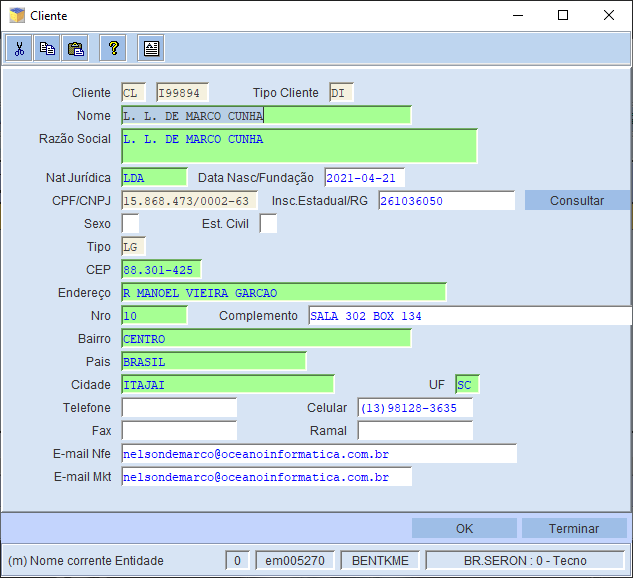
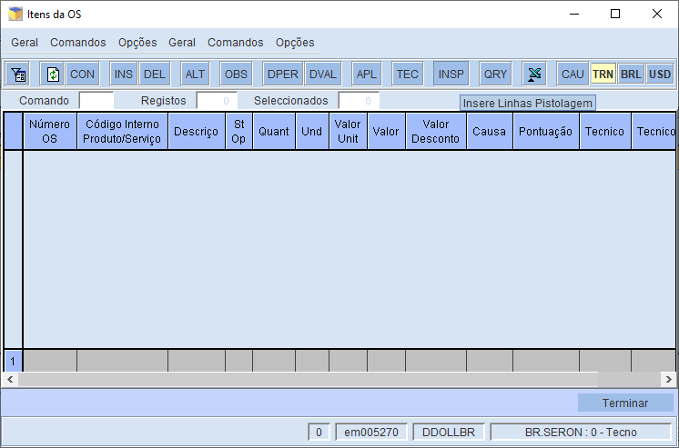

Qualquer e todo procedimento é necessário a aberto de O.S
1. Vai em IBYTE – LOGISTICA – ORDEM DE SERVIÇO. Altera número de registro para 1 e aperta em Ok.
2. Clicar em OS e preencher com os dados do cliente - CPF ou CNPJ.
3. Irá abrir a tela cliente, não faz nenhuma alteração e aperta em Ok e Termina respectivamente.
4. Irá abrir a tela Abertura da Venda e efetuar as seguintes alterações:
Tipos OS: P
Doc Associado: NNF + número da nota
Tipo Produto: 'Clicar F4'
Modelo: Código do produto
5. Em seguida, clicar em INSP e digite ou pistola o código de barras do produto e na tela posterior que abrir em Serial Number, substituir FIM pelo Codigo de Barras, por fim: Terminar.
6. Após clique em OBC, irá abrir uma tela escrita: Solicitação do Cliente
7. Apague as informações aprentadas (abaixo de "reclamação do cliente" até "dos dados").
Após clique em OBI e repita exatamente o mesmo processo. Aperte ok no final.
8. Em logistíca - Ordem de Serviço, cliente em Ibyte Service - LB-ENC.Laboratório
9. Clicar em IOS, irá aparecer a tela identificando os Itens da OS.
10. Clicar em TEC e aperta na aba preenchendo o EM e por fim, em OK
11. Clicar em Outras operações - Imprimir OS e sempre anota o Número da O.S e o CL do cliente.